<%=m_client_en%>
보철치료란 치아를 상실했거나 충치, 잇몸염증, 외부적 충격으로 인해 발치 했을 경우
치아 손실이 큰 경우 치아 대신에 인공적으로 치아를 만들어 주는 치료를 말합니다.
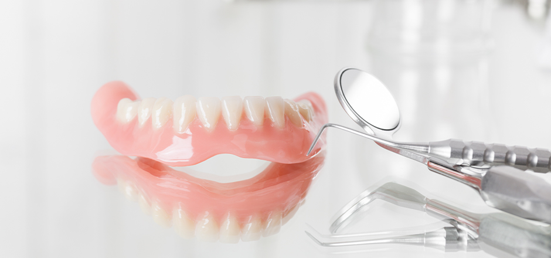
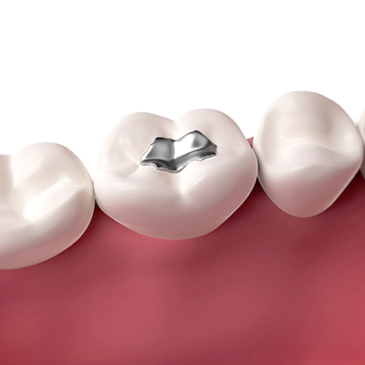
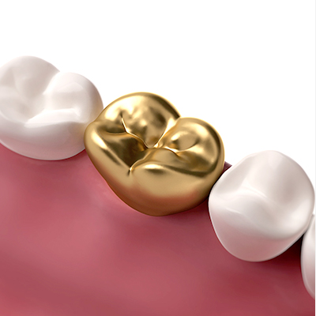
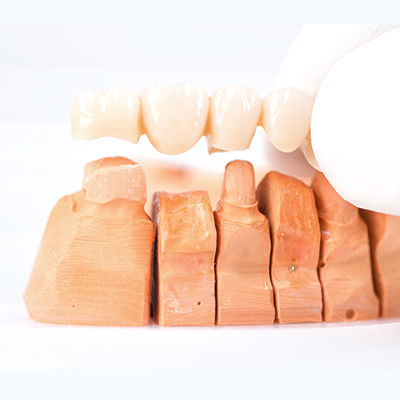
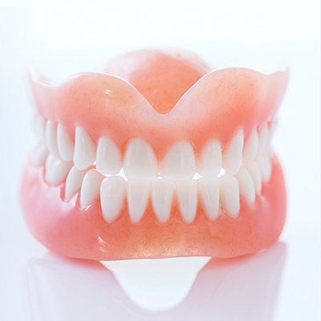
주로치아끼리 맞닿는부분 또는 씹는면에 충치가 생긴 경우에 충치 부위를 제거 한 후
금이나 레진 또는 세라믹 등을이용하여 손실된 부위를 충전하는 치료방법입니다.
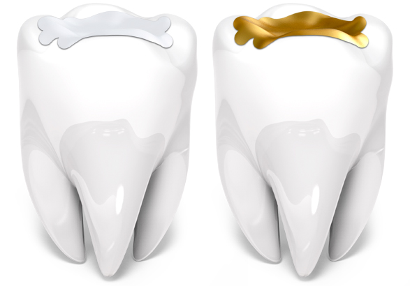
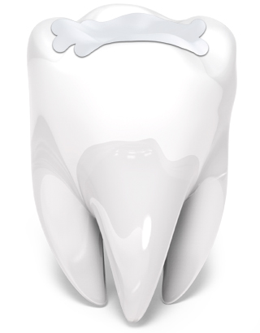
치아와 유사한 색과 강도를 가져 충치치료를
하지 않은 듯한 심미적인 재료입니다.
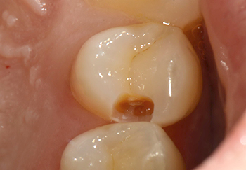
BEFORE
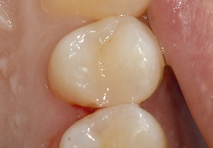
AFTER
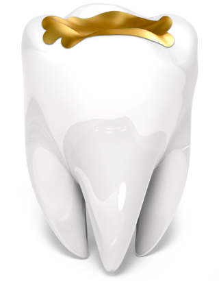
강도가 우수하고 침이나 음식물에 의한 부식이나
변색이 덜하고 깨질 걱정이 없습니다.
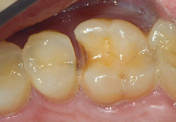
BEFORE
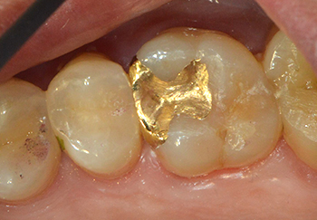
AFTER
| 레진 | 인레인 | |
|---|---|---|
| 공통점 | 충치 치료에 가장 보편화된 치료법 | |
| 치료 대상 |
충치 범위가 작고 씹는 힘이 적게 들어가는 곳에 적합 |
치아끼리 맞닿는 부분 또는 씹는면에 충치가 생긴 경우 시행 |
| 장점 | 접착력이 좋아 치아에서 빠져나올 가능성이 적으며 치아색과 거의 같음 |
손실된 치아와 똑같은 모양으로 제작, 치아의 기능을 거의 회복 |
| 단점 | 강도가 떨어져 충치부위가 넓거나 힘을 많이 받는 부분이 손상된 경우 사용하지 않음 |
충전물의 비용이 비교적 비쌈 |
치아가 깨지거나 충치의 정도가 심할 경우 치아를 다듬고 본을 떠서 만든 보철물로
치아전체를 덮어씌워 치아를 보존하고 치아형태를 회복시켜주는 치료입니다.
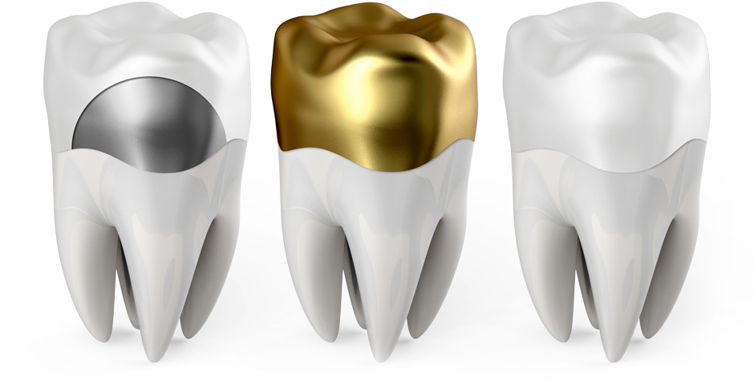
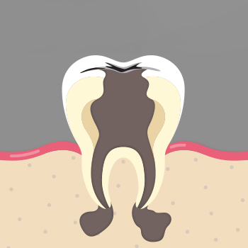
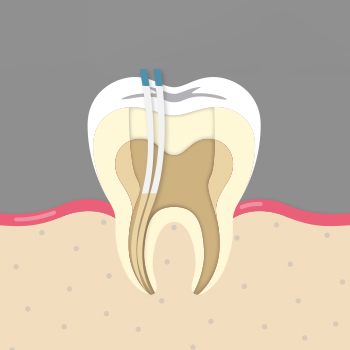
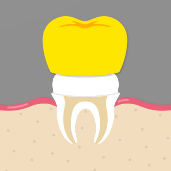
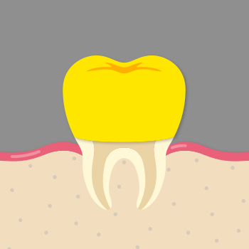
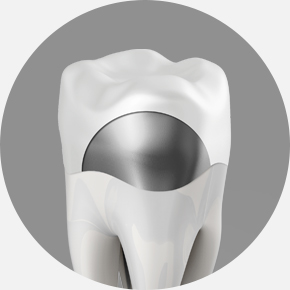
01PFM
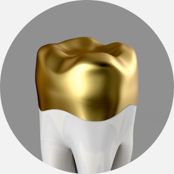
02GOLD(금)
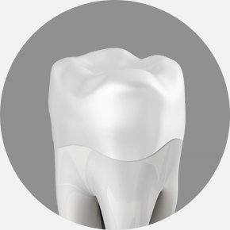
03지르코니아
심한 충치나 외상 등으로 인해 치아가 상실된경우 주변치아를 이용하여 연결해주는 치료를 말합니다.
치아가 없는 공간을 양 옆 치아에 보철물을 걸어 고정해 주는 보철장치로 ‘브릿지’ 는 다리를 뜻합니다.
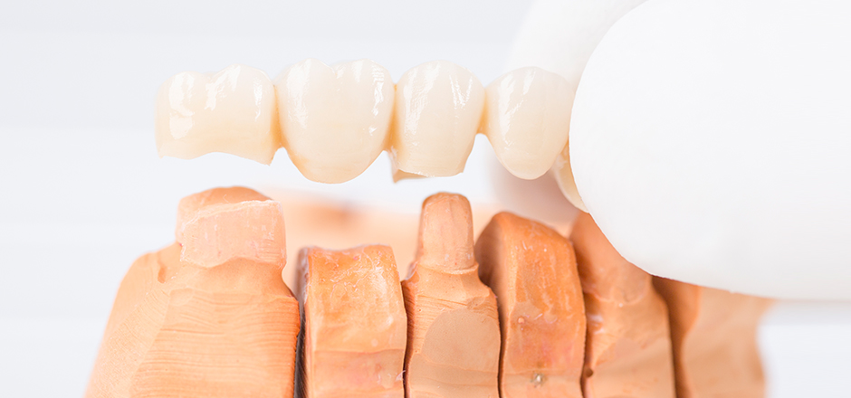
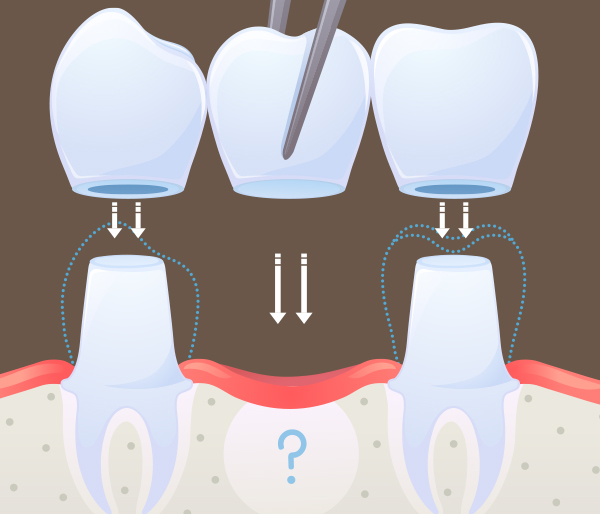
| 브릿지 치료 | 임플란트 | |
|---|---|---|
| 시술방법 | 양쪽 치아를 깍고 세개의 치아를 한 덩어리로 만들어 빠진 부분을 인공치아로 메우는 방법 |
독립적인 인공치아 뿌리를 뼈 안에 삽입하는 방법 |
| 치료기간 | 1~2주 | 당일 ~ 6개월 |
| 심미성 | 좋음 | 좋음 |
| 저작력 | 치아 주위에 골 손실 진행, 저작력이 다소 저하됨 |
자연치아와 매우 유사 |
| 단점 | 양 옆의 치아가 약간의 손실이 있으며 주위치아의 흔들림이 있으면 치료가 불가함 |
치료기간이 길고 치아 사이 음식물이 끼일 수 있음 |
환자 스스로 장착 및 제거가 가능하고 세척도 할 수있는 가철성 보철물입니다.
치아가 탈락된 자리에 인공치아로 대체해주는 치료방법으로
과거에 비해 저작력과 심미성 모두 만족할 만한 기능을 갖추고 있습니다.
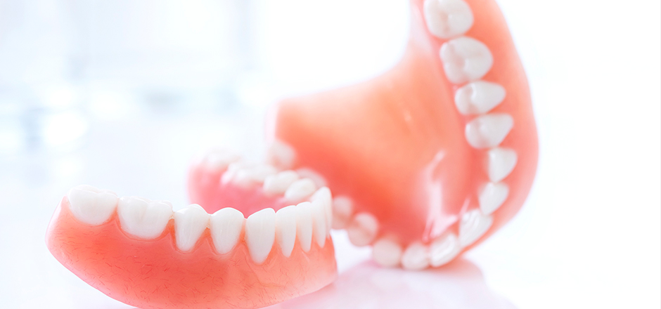
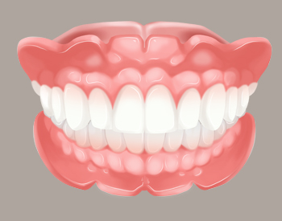
치조골이 비교적 튼튼하고 치조골 상실이
비교적 적은 경우 틀니가 잇몸에 잘붙어있어
저작에 무리가 가지 않습니다.
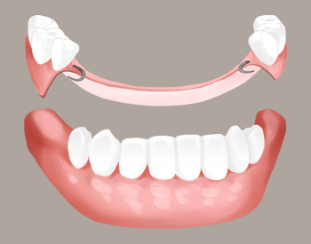
치아가 온전히 있을 때와 동일한 저작력을
내지는 못하나 음식물 섭취 시에 불편함을
느끼지 않을 만큼 도움이 되는 치료 방법입니다.
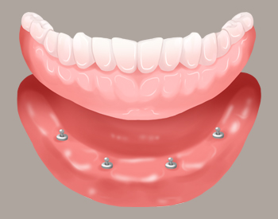
입안에서 빠질 염려가 적고, 질긴 음식도
씹을 수 있으며 자연치아 저작력의
80% 이사의 힘을 낼수 있습니다.
| 대상 | 만 65세이상 건강보험가입자 또는 피부양자 |
|---|---|
| 틀니 종류 |
완전틀니 - 치아가 하나도 없는 상태(완전무치악) 부분틀니 - 치아가 일부 없는 상태 (부분무치악) |
| 보험 적용기간 |
7년에 1회 |
| 본인 부담률 |
30% (단, 차상위 희귀난치성 질환 5%, 만성 질환자 15%) |